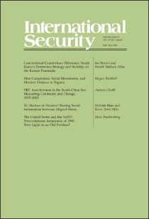
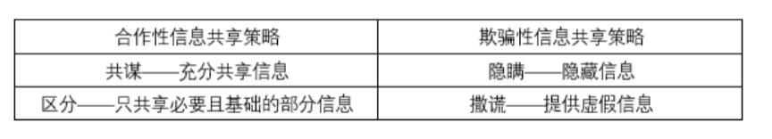
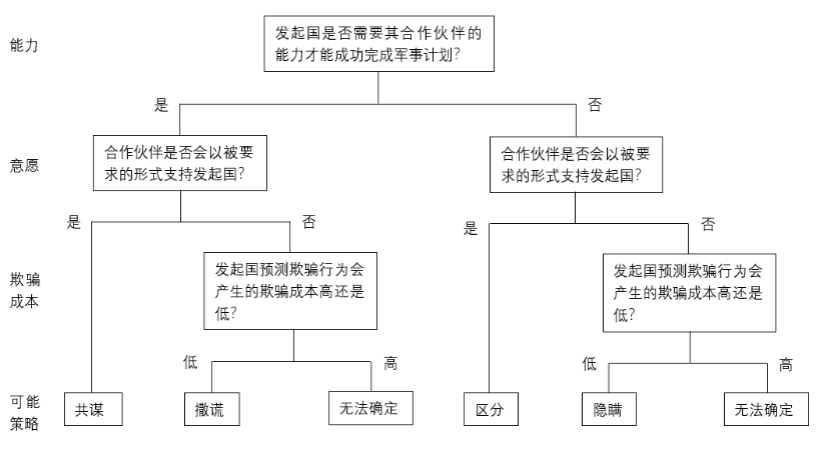
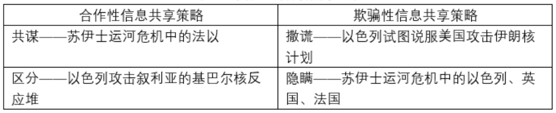

收录于合集 #《国际关系前沿》2021年第11期 18个

作品简介
作者： Melinda Haas，普林斯顿大学政治学博士候选人，主要研究方向为国际安全、国际法、美国外交政策、情报等。Keren Yarhi- Milo，哥伦比亚大学政治学系和国际公共事务学院萨尔茨曼战争与和平研究所教授，主要研究方向为国际安全、外交决策、危机谈判、情报等。
编译： 石稚瑄（国政学人编译员，国际关系学院国际政治系）
来源： Melinda Haas & Keren Yarhi-Milo, To Disclose or Deceive? Sharing Secret Information between Aligned States, International Security , Vol. 45, No. 3, pp. 122–161, Winter 2020/21.Doi:10.1162/isec_a_00402.
归档： 《国际关系前沿》2021年第11期，总第38期。 ****
期刊介绍

《国际安全》（International Security）是国际关系和国际安全研究领域的顶级期刊，成立于1976年，由哈佛大学贝尔弗科学与国际事务中心（Belfer Center for Science and International Affairs）资助，麻省理工学院出版社出版。据期刊引证报告（Journal Citation Reports）统计，其影响因子（impact factor）一直高居国际关系领域前五。2019年，该刊在国际关系领域排名第一。
内容提要
为什么国家有时会向盟友透露其使用武力的军事计划的秘密信息，而有时却选择欺骗盟友？发起计划的国家可以在四种信息共享策略中进行选择： 共谋（collusion）、区分（compartmentalization）、隐瞒（concealment）和撒谎（lying）。 三个主要因素影响其决定：国家对其是否需要其盟友的实力才能成功完成军事任务的评估，国家对盟友是否愿意扮演其所要求角色的认知，以及国家未完全告知其盟友的预期欺骗成本。几个案例对策略选择进行了说明：以色列、英国和法国在苏伊士运河危机期间决定对埃及使用武力（法国和以色列之间的共谋，以及对美国的隐瞒）；以色列2007年轰炸叙利亚的基巴尔核反应堆（区分）；以色列考虑是否攻击伊朗的核反应堆（撒谎）。这些策略对联盟内部的约束有影响，有助于理解盟友之间的欺骗和保密。
文章导读
01
导论
尽管国际政治中的保密话题重新兴起，但盟国间的欺骗问题（包括撒谎和隐瞒）却较少受到关注。米尔斯海默认为被发现对盟友撒谎的国家很可能为欺骗付出沉重代价，这将“破坏信任并损害盟友关系”并“最终伤害撒谎的国家”。然而，即使在谎言可能被对方拆穿的情况下，两个长期保持结盟关系、战略利益高度一致的盟友在开展军事合作时仍常会欺骗对方。当前学界对各国选择欺骗而非透露的条件缺乏研究。此外，如何解释一国信息共享策略的变化？例如， 为什么国家有时会选择分享有关其使用武力意图的信息，而有时却撒谎？它们什么时候选择隐瞒这种信息，什么时候透露？ 本文提供了一个关于国家如何在不同条件下选择四种不同的信息共享策略（共谋、区分、隐瞒和撒谎）的理论。
文章的其余部分如下。首先讨论关于结盟国家的现有文献，以及盟国间的秘密和欺骗是如何被低估的。然后构建了一种理论用于解释信息共享策略的变化，并通过四个案例对理论进行检验。最后针对理论框架对国家合作或操纵行为的影响进行了讨论。
02
关于保密与国家合作的既有文献
本文关于信息共享策略和军事合作的理论借鉴了与约束盟国（alliance restraint）相关的早期理论。约束盟国的文献假设国家知道其盟友的军事计划，因此可以干预这些计划的实施。相反，本文从理论上探讨了一个国家是否会与可能干扰或报复该计划的盟国共享有关该计划的信息。关于约束盟国的文献多集中于正式联盟，而本文的理论扩展到非正式联盟关系。
当前学界有少量关于盟国间欺骗问题的研究： 1、关于一国为何向盟友隐瞒有关自身的信息或分享关于他国的虚假信息，一些研究认为国家可能在自己的意图或实力方面虚张声势，也可能利用盟友关系更容易、更有效地进行伪装；另一些研究认为可能是外部强烈威胁的结果。2、欺骗更可能发生在竞争对手而非盟友之间。米尔斯海默认为这是因为撒谎的国家很可能对联盟造成无法挽回的破坏。然而，事实上领导者确实会对盟友撒谎，本文提出的理论增加了领导者何时会或不会选择撒谎的范围条件。
尽管学界对国家相互撒谎有一定研究，但对于盟国选择撒谎还是隐瞒的条件研究不足。此外，现有研究很少探讨盟国在合作性策略和欺骗性策略之间做出选择的逻辑。本文填补了这一学术空白。
03
透露还是欺骗
在考虑是否使用武力时，决策者必须权衡可能的利益与战略、政治、经济和无数其他风险。一旦他们决定对一个目标使用武力，他们就会面临另一个困境：国家是否应该与盟友分享有关其意图和计划的信息？或者，它是否应该对盟友保密？或者，它是否应该故意向盟友提供虚假信息？
本文假设有两个国家：一个发起国，它想要对目标国使用武力；一个合作伙伴——一个与发起国结盟并有可能协助它的国家。我们的研究考察了发起国是否选择共享可能使用武力的信息，这些信息(1)发生在发起国边界之外，(2)直接或间接涉及合作伙伴的安全利益，以及(3)发起国不希望向目标国公开。
** 范围条件**
** _
_**
首先，本理论适用于为了保持作战突然性或避免来自国内或国际压力而事先保密的进攻性武力使用。此类行动可能包括预防性和先发制人的打击，以及其他类型的进攻性军事任务，例如网络攻击、秘密救援任务、定点清除任务以及夺取领土的突袭行动。
其次，本理论适用于计划的武力使用对合作伙伴的安全利益有重大影响的情况。尽管本理论侧重于伙伴国家之间何时以及如何共享秘密信息，但它也适用于正式联盟，尤其是那些对于一国是否有义务向其盟友透露其军事计划的条款含糊不清的联盟。
第三，本理论关注情境化的权力平衡：在特定背景下针对特定目标，发起国是否具有成功完成其计划的军事实力？例如合作伙伴可能具有对完成特定任务特别有用的独特实力。本文在计算欺骗该合作伙伴的成本时考虑了这种依赖关系的程度。
第四，本理论关注主观评估是否以及如何影响发起国采用的信息共享策略。
_ 信息共享策略_
_ **
**_
发起国在考虑使用武力时可以采用四种信息共享策略，其中两种为合作性策略——共谋和区分，两种为欺骗性策略——隐瞒和撒谎。
表1：因变量：合作性与欺骗性信息共享策略

“共谋”即发起国与其合作伙伴完全共享其对第三国使用武力的秘密军事计划，包括攻击的性质、时间和范围。 这种策略的好处在于合作伙伴可以为发起国提供物质利益或使用武力的合法性来源。其潜在风险包括合作伙伴可能的破坏性泄露，合作伙伴胁迫发起国修改计划等。
“区分”即发起国仅向其合作伙伴提供有限的信息，从而减轻了共谋的相关风险 。这种策略可以防止计划意外泄漏，也能表现出对合作伙伴的坦诚，但可能会引起合作伙伴的进一步审查。因此，区分只是降低了共谋的风险，而没有消除。
“隐瞒”即发起国不共享信息并使合作伙伴完全不了解其意图。 隐瞒对发起国有利，可以防止合作伙伴限制或破坏发起国，并降低了泄露风险。但这中策略涉及额外成本。一旦秘密行动被揭露，发起国可能遭到合作伙伴的政治或外交报复，特别是如果发起国的行为干扰了合作伙伴的外交政策。
“撒谎”即发起国选择向合作伙伴传达不真实的情况，意图欺骗或误导合作伙伴对其计划产生虚假印象。 撒谎是确保合作伙伴支持发起国军事行动并愿意扮演发起国要求的角色的一种手段。撒谎涉及两种类型的虚假信息。一种是关于发起国意图或实力的信息，另一种是关于其他国家意图或实力的信息。
_ 信息共享策略的来源_
_ **
**_
发起国对信息共享策略的选择取决于三个因素： （1）发起国认为军事计划成功需要合作伙伴实力的程度。 如果发起国认为是必要的，其更可能与合作伙伴共享信息。 （2）发起国认为合作伙伴以其要求的形式提供支持的可能性。 如果发起国认为合作伙伴愿意以其要求的形式提供支持，其更有可能分享信息；如果发起国认为合作伙伴不愿按其要求提供支持，发起国更有可能选择欺骗性策略。为了评估合作伙伴的可能反应，发起国可能会采取试探舆论的行动，向媒体泄露信息或与非官方特使进行非正式对话以评估合作伙伴的反应。 （3）发起国对欺骗合作伙伴可能招致的欺骗成本的评估。 发起国会寻找多种来源确定是否会产生以及可能产生哪些类型的成本，比如发起国与合作伙伴以往在类似问题上的互动、合作伙伴对于其他国家欺骗行为的应对、合作伙伴增加欺骗成本所面临的国内政治和战略限制等。此外，当发起国与合作伙伴之间高度相互依赖、正式联盟中对信息共享存在制度化规则、一旦军事计划失败合作伙伴将陷入困境等情况下，欺骗成本将会很高。
在其他条件相同的情况下，只要合作伙伴不会有意或无意地过早暴露军事计划并以发起国希望的方式进行合作，发起国愿意对合作伙伴采取合作性策略而非欺骗性策略。图1说明了发起国的认知如何结合阶梯式的理论产生四种信息共享策略。

图1：发起国评估合作伙伴的实力、意图以及发起国可能承担的欺骗成本，可能选择的四种信息共享策略
当发起国确定需要其合作伙伴的实力才能成功完成军事计划时，发起国会考虑合作伙伴是否会以其希望的方式提供支持。如果是，发起国更可能选择共谋策略。如果否，发起国不得不对欺骗合作伙伴而产生的欺骗成本进行预测，若成本低，发起国可能选择撒谎策略；若成本高，发起国可能的策略无法确定。
当发起国不需要其合作伙伴的帮助就能成功完成军事计划时，如果合作伙伴愿意以发起国要求的形式提供支持，发起国很可能选择区分策略。如果合作伙伴不愿以发起国要求的形式提供支持，发起国将对欺骗合作伙伴而产生的欺骗成本进行预测，若成本低，发起国可能选择隐瞒策略；若成本高，发起国可能的策略无法确定。
_ 策略转变_
_ **
**_
信息共享活动从发起国考虑对目标国家使用武力开始，到军事计划执行（或中止）之前结束。在此期间，发起国的信息共享策略可能会随新信息发生变化：（1）随着完成计划所需特定实力的信息增多，发起国可能会改变“完成计划是否必需合作伙伴帮助”的看法；（2）根据新的情报或从试探舆论行动中获得的信息，发起国可能会重新评估合作伙伴是否愿意以其要求的形式提供支持；（3）如果发起国选择欺骗策略，它可能会重新评估可能发生的欺骗成本。
只要对采用何种信息共享策略的审议是内部且保密的，发起国就可以自由转换策略。但一旦发起国以合作性或欺骗性的方式与合作伙伴接触，路径依赖就可能成为改变战略的障碍。例如，如果发起国实施了共谋策略，发起国将更难对同一合作伙伴转向隐瞒。如果计划过早暴露，发起国可用的信息共享策略可能会大大减少。
04
案例分析
如表2所示，本文运用四个案例来检验理论。
表2：实证分析的案例选择

_ 1956年以色列与法国在苏伊士的共谋_
_ **
**_
1956年7月纳赛尔将苏伊士运河国有化。在英国的支持下，法国开始与以色列就其对埃及使用武力的计划进行全面信息共享。法国需要以色列在其对埃及的攻击中发挥关键作用，并有充分理由相信以色列会同意参与。法国无法单独行动，因为它在埃及附近没有空军基地，也没有航空母舰，无法对抗埃及的空中力量。法国认为美国不太可能参与行动。法国需要英国的支持，特别是利用英国在塞浦路斯的基地登陆部队，其军事计划的成功实施其实不需要以色列的物质支持。但法国认为以色列加入英法计划是证明对埃及使用武力合法性的重要手段。在此背景下，法国国防部长莫里斯·布尔热- 莫努里会见以色列国防部长西蒙·佩雷斯，询问“以色列是否准备参加三方军事行动（以色列的具体任务是穿越西奈）”并得到肯定回答。以色列总理大卫·本-古里安确信，除了这种参与之外，以色列的另一种选择是单独对抗埃及。1956年10月，在以色列保证合作后，法以举行了秘密会议以讨论以色列的确切任务。法国提议“以色列跨西奈半岛进攻埃及，然后法国和英国命令埃以双方从苏伊士运河撤军，并以保护运河免受战火破坏为由进行干预和占领。”虽然面临被称为侵略者的风险，但为了获得法国的武器，以色列愿意以此形式支持法国的计划。
1956年在苏伊士对美国的隐瞒
_ **
**_
苏伊士运河危机中不仅出现了共谋策略，而且出现了隐瞒策略。法国与英国作为北约的两个成员，拥有足够的军事实力，尤其是在与以色列联合的情况下，可以重新夺回苏伊士运河。1956年9月，三国认为美国出于各种国内和战略原因不愿对纳赛尔采取行动，而会选择外交。出于多种原因，三国认为对美国的欺骗性行为所导致的欺骗成本较低。法国相信美国会纵容其与英国、以色列一起进攻埃及，因为英法是美国在北约的两个主要盟友。以色列认为美国不太可能对其实施经济制裁，因为艾森豪威尔总统寻求在11月的选举中确保犹太人的选票。随着攻击日期的临近，英国、法国和以色列对美国采取行动保密的策略。英法故意与美国“断绝正常渠道信息取得”，美国国务卿杜勒斯报告称“法国和英国与我们之间关于中东的信息几乎完全断绝”。当以色列进攻埃及的消息传到白宫，艾森豪威尔非常惊讶，副国务卿罗伯特·墨菲表示“华盛顿根本没被告知英国和法国在做什么。我们不知道他们打算走这么远。”
2007年以色列攻击叙利亚基巴尔核反应堆时对美国的区分
_ **
**_
2007年以色列攻击叙利亚基巴尔核反应堆时，只对美国共享了必要且基础的部分信息。2007年3月以色列情报机构摩萨德特工从叙利亚原子能委员会负责人的家里找到了从基巴尔核反应堆内部拍摄的照片。以色列不需要美国的实力来协助其成功完成袭击叙利亚基巴尔核反应堆的计划。以色列希望美国主导此次行动，传达既能阻止叙利亚核扩散、又能阻止伊朗核开发的政治信息。尽管美国不愿成为这次行动的代言人，但愿意在以色列准备其军事计划时为其提供外交掩护。美国支持以色列行动的隐蔽性，并表示不会让以色列放弃此次行动。在整个过程中，以色列与美国分享了袭击准备工作即将完成这一信息，但美国在袭击发动之前并没有被告知确切的袭击时间。以色列在必要的基础上向美国提供了有限信息——袭击将会发动，但没有将美国纳入行动范围，以便两国可以声称美国事先不知道这次袭击。
2010年至2012年以色列因伊朗核计划对美国撒谎
_ **
**_
以色列对美国撒谎，表示其将单方面攻击伊朗。2011年底和2012年初，国际原子能机构证实伊朗正在进行核武器研究。这引发了以色列可能对伊朗发动单方面攻击的谣言。但以色列缺乏确保有效摧毁伊朗核设施基础所需的军事实力，且美国的支持可以提高其行动的合法性。以色列认为，鉴于美国为阻止伊朗核扩散投入的外交努力，美国将反对使用武力。为了使美国的政策朝着有利于以色列的方向发展，以色列夸大了单方面攻击伊朗的意愿。以色列领导人认为这种夸张带来欺骗成本低。考虑到以色列政府高层的保密性和以色列领导人过去在讨论伊朗构成的威胁时的极端言辞，以色列的真实意图很难评估并几乎没有受到惩罚。关键的欺骗行为发生在2012年，以色列为了强调其袭击伊朗的可信度，发动了大规模的军事集结。一位白宫官员称，除了副总统拜登认为这只是虚张声势外，总统奥巴马和国防部长帕内塔等政府高层都对以色列的信号感到了压力。以色列的努力最终未能说服美国与其合作对伊朗进行军事打击。迄今为止，以色列一直避免单方面攻击伊朗的核反应堆。
05
结论
本文表明，信息共享策略的选择不仅影响发起国最终是否使用武力，而且影响选择单边还是多边武力。此外，发起国选择的信息共享策略可以塑造盟国间的后续互动，从而带来更多信任和进一步合作，或者增加欺骗成本和联盟内部矛盾。本文还涉及了合作伙伴约束发起国的能力。 在其他条件相同的情况下，当发起国选择向合作伙伴隐瞒其计划或撒谎时，合作伙伴的约束潜力最低；当发起国选择共谋时，合作伙伴的约束潜力最高；当发起国选择区分时，合作伙伴具有中等程度的约束潜力。
盟友之间的欺骗和保密尚未得到充分研究，研究各种形式的欺骗及其成功的可能性将具有指导意义。学者可以研究 各国何时基于自身意图和实力有效使用欺骗手段，或者使用关于第三国的虚假情报来说服其他国家支持其外交政策。 未来的研究可以通过检查对手之间信息共享策略的选择来进一步扩大研究范围。不同于盟友间信息共享策略的困惑是隐瞒和撒谎，对手间信息共享策略的困惑将是共谋和区分。
译者评述
研究联盟的国际关系学者通常更关注军事合作产生和维持的条件，而很少关注联盟国家之间的欺骗行为（包括隐瞒和撒谎）。事实上，即使是在长期结盟、战略利益一致、对方很有可能发现谎言的盟国之间，欺骗也时有发生。本文将信息共享策略分为合作性和欺骗性两类，前者包括共谋和区分，后者包括隐瞒和撒谎。研究发现，三个主要因素影响国家对信息共享策略的选择：国家对是否需要其盟友的实力才能成功完成军事任务的评估，国家对盟友是否愿意扮演其所要求角色的看法，以及国家未完全告知其盟友的预期欺骗成本。当发起国需要其合作伙伴的实力才能成功完成军事计划时，若合作伙伴会以其希望的方式提供支持，则发起国可能选择 共谋 策略；若合作伙伴不会以其希望的方式提供支持，且发起国预测欺骗行为产生的欺骗成本低，则发起国可能选择 撒谎 策略。当发起国不需要其合作伙伴的实力就能成功完成军事计划时，若合作伙伴会以其希望的方式提供支持，则发起国可能选择 区分 策略；若合作伙伴不会以其希望的方式提供支持，且发起国预测欺骗行为产生的欺骗成本低，则发起国可能选择 隐瞒 策略。
但本文存在一个瑕疵，对欺骗成本的高低并没有明确的判断标准。作者在文中承认，欺骗成本不仅会由合作伙伴施加，还可以由国际组织、其他盟国甚至发起国的国内公众施加，因此对欺骗成本的评估具有主观性。
本文的意义在于对联盟内部的欺骗行为给予了关注，并解释了国家何时向盟友透露军事计划秘密信息或欺骗盟友。 近年来，中美竞争加剧，美国积极拉拢盟友加入大国竞争，鼓励盟友发挥关键作用，例如美英加澳新“五眼联盟”、美日印澳“四方安全对话”、美英澳“AUKUS”等等。研究联盟内部的欺骗行为有利于中国预判相关国家的策略选择，提前谋划策略，减轻安全压力。
词汇整理
约束盟国 alliance restraint
试探舆论的行动 trail balloons
共谋 collusion
区分 compartmentalization
隐瞒 concealment
撒谎 lying
责编 | 王浩宇 晋玉
排版 | 黄紫蓝 彭雯昕
文章观点不代表本平台观点，本平台评译分享的文章均出于专业学习之用, 不以任何盈利为目的，内容主要呈现对原文的介绍，原文内容请通过各高校购买的数据库自行下载。

国政学人
支持学术公益与知识传播
微信扫一扫赞赏作者 __赞赏
已喜欢，对作者说句悄悄话
取消 __
发送给作者
发送
最多40字，当前共字
上一页 1/3 下一页
长按二维码向我转账
支持学术公益与知识传播
受苹果公司新规定影响，微信 iOS 版的赞赏功能被关闭，可通过二维码转账支持公众号。